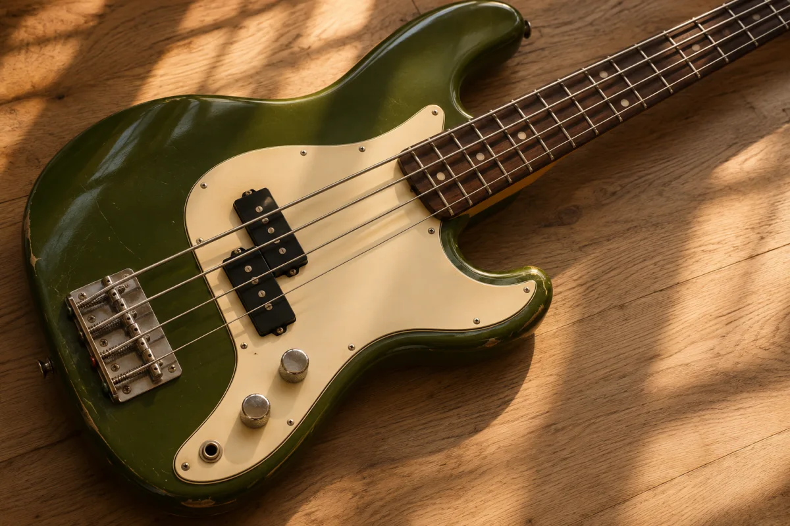

Learn bass from the ground up.
Start with notes and rhythm, then learn how scales, intervals, and chords work together. Try each idea on your bass as you go.

The lesson path
Start at the top or jump to the topic you want to practice.
Start with notes and rhythm, then learn how scales, intervals, and chords work together. Try each idea on your bass as you go.

Start at the top or jump to the topic you want to practice.